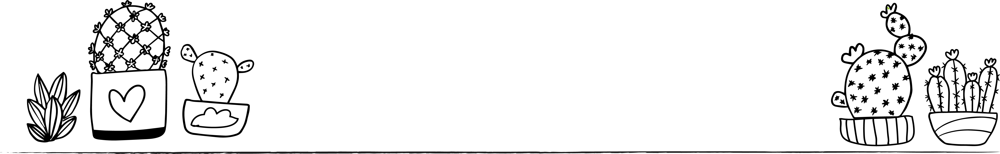
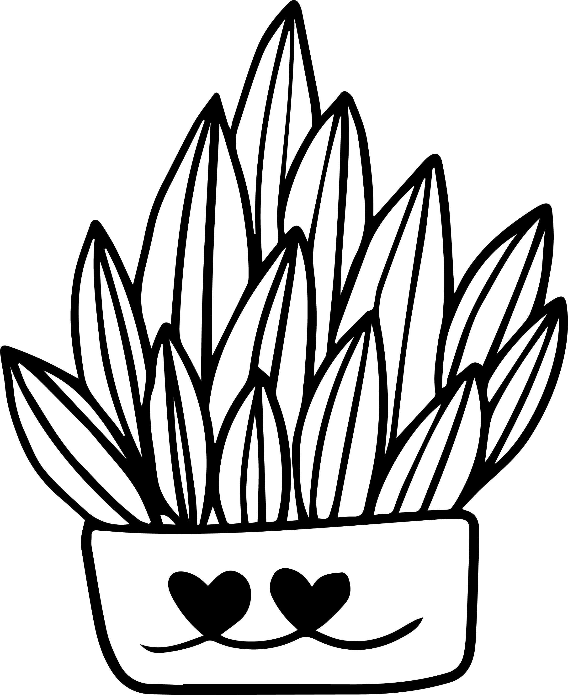
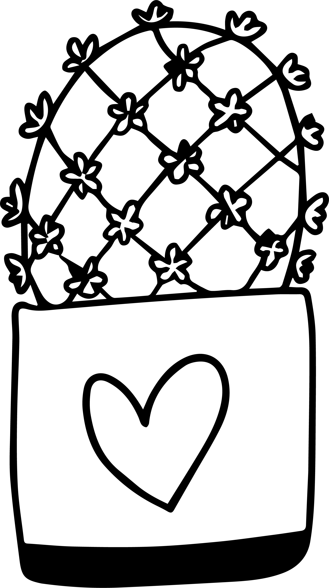
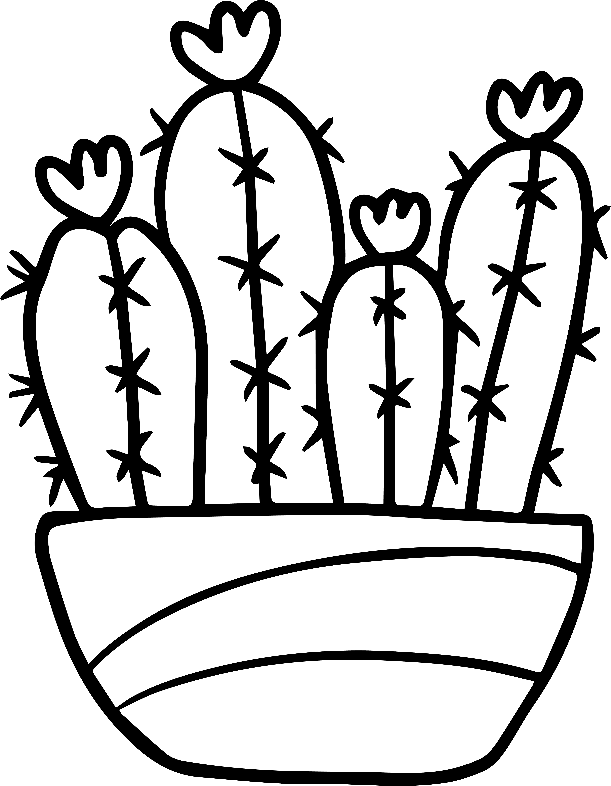

Cacti and succulents are popular home and office plants as they easily fit into various interiors, help to create a cozy atomsphere, and are not demanding in care. However, even seemingly low plants still require some attention to stay healthy. We are here to share basic rules and expert tips on planting so there is always a happy plant in each your pot!

choosing your plant
There are several things to consider when choosing your new prickly companion. Would you like your cactus to be a dramatic statement piece or small and discreet? Are you prepared to give your plant some TLC or are you after something more low-maintenance? Our quiz will give you some ideas on what kind of cactus could be perfect for you.

watering
Cacti, which are native to the desert, can famously survive with very little water - but need the right amount at the right time in order to actually thrive. The amount of water you will need to provide your plant with will vary according to the season and stage of growth.
When growing, water your cactus once a week and make sure that the water soaks the ground thoroughly. To ensure your plant has all the compounds it needs, add a diluted fertilizer to the water you use - choose one with balanced proportions of nitrogen, phosphorus and potassium. Water your cactus more frequently in summer and spring. During fall and winter, the plant’s rest period, it’s advised to let the soil dry out between watering — as long as you ensure the cactus doesn’t shrivel. Tap water can be alkaline or hard, which can cause buildup of minerals in the soil. This is why it’s a good idea to periodically repot your plants — and collect rain water for your plants if you can.

lightning
Although cacti love sunlight and are pretty sturdy plants, too much direct sunlight can stress them out. This applies particularly if they are exposed to high temperatures at the same time.
Too much light can cause your cactus to appear 'bleached out’ or even scorch, causing permanent damage, so it’s important to make sure to keep an eye on it during the summer months.When your cactus lacks sunlight it can start to reach for the light source — making it look elongated or misshapen. If you see this happening, place your cactus in a sunnier spot, but do so gradually to avoid scorching. If you are unable to provide your cactus with sufficient sunlight indoors, consider investing in a grow light fixture. The light should be at least 2,000 lumens for each square of light to provide the kind of light exposure the cacti would get in their natural habitat.

potting
Given the popularity of cacti as ornamental plants, you will likely want to experiment with ornamental pots to provide an elegant backdrop to your plant. The good news is that cacti are versatile and can happily grow in both ceramic and plastic pots.
Most cacti have fibrous, superficial roots, which means they will enjoy being in a wide, shallow pot. Make sure to check what type of root system your species of cactus has to ensure you provide a suitable container for it to grow in. The soil you choose for your cactus should drain well to ensure water doesn’t build up in the pot. A good tip to ensure this is to mix some compost, sand and grit (for example crushed pumice) into the soil. Regular repotting is important to refresh the soil and ensure your cactus is comfortable in its pot. Ideally cacti should be repotted once a year, but there are usually signs when your cactus needs a new home — pushing its way out or growing its roots out of the pot’s drain holes.
virtual windowsill
Get inspired by looking through these gorgeous cacti compositions on Instagram
#cacti